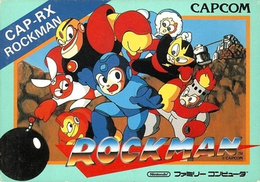

Overview
Originally released for the Nintendo Entertainment System in Japan in 1987, Mega Man 1, or simply Mega Man as it was known before its many sequels and subseries were released, is a traditional platforming game with only three main controls: move, jump and shoot. The game is available on a wide variety of modern consoles, such as Nintendo Switch and Playstation 4 as part of the Mega Man Legacy Collection (which contains the first 6 NES games), and even on the iPhone's app store for a relatively cheap price.
This website aims to act as an easily understandable guide for players who are new to the game and would like a helping hand to guide them through some of the notoriously difficult levels which the series is famous (or perhaps infamous?) for.
The Story...
In the early 21st century (remember, this game was released during the late 80s, when the year 2000 seemed like the distant future) many different types of robots are created by the brilliant Dr Thomas Light, a genius inventor whose advanced products help to reshape the ways in which technology is used to aid the human race. However, one day the dastardly Dr Wily causes these robots to lose control and begin attacking innocent civilians and destroying landmarks. Six of these robots are deadly humanoid androids with unique functions who have now been corrupted and work for Wily; taking down these six villains will be your main goal throughout the game.
Luckily, Dr Light's assistant robot, Rock, volunteers to be transformed into a fighting robot called Mega Man, who is the titular blue character you'll be controlling. Interestingly enough, Mega Man's original Japanese name is Rockman; the name change in America and the UK was intended to appeal more to western audiences.
Speaking of changes in non-Japanese territories, the story according to the official game manual was slightly different in the West. It was changed so that Dr Wily was Light's assistant with whom he co-created Mega Man along with the other six humanoid robots, and after Wily becomes disloyal and programs the six bots to carry out his evil bidding, Light sends Mega Man after them. Also, according to the western plot, the city in which the two doctors live is named 'Monsteropolis', which is very similar to the name of the city from Disney/Pixar film Monsters. Inc.
Play it Yourself!
If you're interested in buying the game along with five of its sequels on Amazon, you can find the Mega Man Legacy Collection for Nintendo Switch here (this Switch version includes a total of NINE sequels!!), the Playstation 4 version here and the Xbox One version here. Also, if you'd like to find out more about the game's history and reception, you can click here to visit its official Wikipedia page.